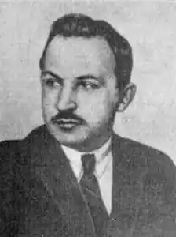

Павло Филипович (1891-1937)
Павло Петрович Филипович народився 2 вересня (20 серпня за ст. ст.) 1891 року в с. Кайтанівці на Київщині (тепер Черкаська обл.) у сім'ї священика. Успішно закінчивши чотири класи гімназії в м. Златополі, він складає іспити в престижну Колегію (коледж) Павла Галагана. Навчається разом з Драй-Хмарою, і, як і той, в майбутньому прилучається до угрупування неокласиків, прихильників орієнтації на західну та античну літературу.
Спершу пише вірші російською мовою, підписуючи їх псевдонімом Павло Зорєв. 1915 року блискуче завершує навчання на історико-філологічному факультеті (на який перейшов після першого курсу з правознавчого) Київського університету. Обдарованого юнака залишають в університеті як професорського стипендіата. 1917 року, сприйнявши революцію як "державно-національне відродження українського народу", Филипович активно включається в літературно-мистецький та суспільно-політичний процес. Свої вірші вже пише українською мовою. В той же час складає магістерські іспити на приват-доцента Київського університету, читає курс новітньої української літератури (1920 р.). На початку 1920-х Филипович активно виступає з літературознавчими, критичними статтями, активно займається перекладацькою діяльністю. Редагує збірники "Шевченко і його доба", пише статті до видань творів Івана Франка, Лесі Українки, Ольги Кобилянської, Олександра Олеся. Виходить і дві його поетичні збірки — "Земля і вітер" (1922) та "Простір" (1925). Естетичні погляди письменника формувалися під впливом символізму, однак його власні поетичні твори за ідейним та художнім змістом не можна однозначно віднести до конкретного напрямку літератури початку століття. "Він наче кував у собі дух гетівського активного пізнання, філософського збалансування суперечностей індивідуального і загального, життя і смерти, руїни і будови, минулого і майбутнього — у вічному світлі одности універсуму" — характеризує поетичне кредо поета Юрій Лавріненко. Незалежність від моди, традицій, своєрідне художнє мислення, висока культура слова — ось характерні риси поезій Филиповича. У своїх творах Филипович бачить людину як позачасовий, узагальнений та вічний феномен, виступає синтезою всеземного існування. Филипович переклав на українську твори Ш. Бодлера, П. Беранже, П. Верлена, багатьох слов'янських авторів. Він не оспівував бетон і залізо, "героїчні" трудодні, не писав агітаційних лозунгів. Письменника заарештували 1935 року. 30 жовтня 1935 року його справу було об'єднано зі справою його студентського товариша — Михайла Драй-Хмари під № 99. Ще пізніше її було приєднано до справи № 1377 — "М. Зеров та його група". 1936 року на закритому суді Филиповича було засуджено до 10 років ув'язнення і вислано до концтабору на Соловки. Є дані, що там йому додали ще 10 років ув'язнення з конфіскацією майна. Без будь-яких підстав "справу Зерова та ін." (по якій проходив і П. Филипович) було переглянуто "особливою трійкою" УНКВС. Спеціальною постановою від 9 жовтня 1937 року Зерову, Филиповичу, Вороному та Пилипенку було винесено вищу міру покарання. Розстріляли всіх 3 листопада 1937 року. Трагічно склалася доля дружини Филиповича — Марії Андріївни. Не витримавши горя, вона збожеволіла. 1939 року (чоловіка вже не було серед живих), "зважаючи" на її прохання перевести її до чоловіка на Колиму, її вислали до Караганди. Подальша її доля невідома. Твори: Література (Нью-Йорк-Мельбурн, 1971); Поезії (К., 1989), Літературно-критичні статті (К., 1991).